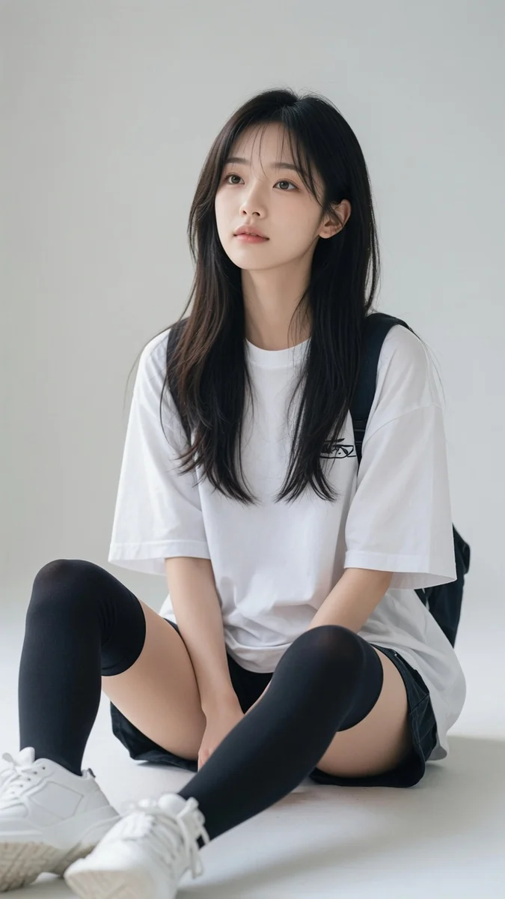
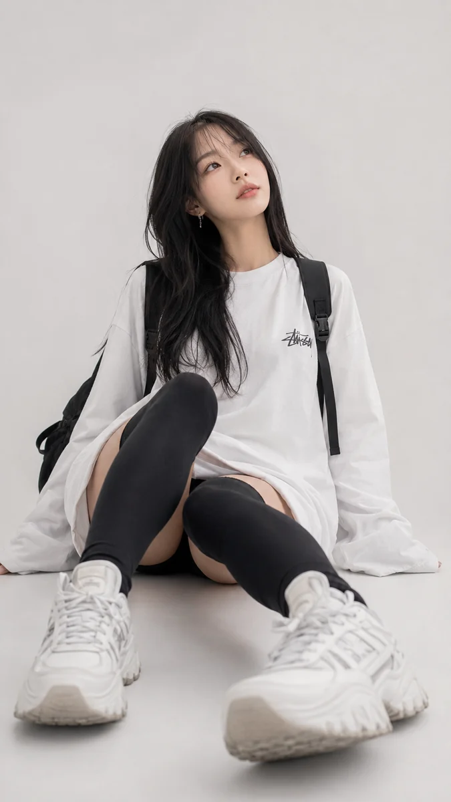

클릭 · Esc 로 닫기


난 네 실제 모습을 보고싶어 아이폰으로 우연히 찍힌 너의 일상을 아주 평범하고 잘못 찍힌듯한 스냅샷으로 모습이 살짝 나오게 보여줘. 사진은 약간 모션 블러가 있고 조명은 고르지 않고 자연스럽게 부탁해
{
"meta": { "aspect_ratio": "9:16", "style": "photorealistic portrait" },
"subject": { "expression": { "eyes": "…", "gaze": "…" }, "hair": "…" },
"lighting": { "type": "soft natural daylight", "direction": "10 o'clock" },
"camera": { "focal_length": "50mm", "shot_type": "three-quarter" },
"negative_prompt": [ "anime", "extra fingers", "plastic skin", "…" ]
}
Photorealistic high-key portrait, ethereal lighting, adult woman,
pale skin, cool-toned shadows, softly narrowed eyes, platinum
silver-white hair, oversized knit sweater, 50mm, filmic overexposure …
Negative: generic AI face, plastic skin, anime, cartoon, 3D render, text …
[Purpose] Vertical fine-art portrait from the reference photo … [Identity Preservation] Keep the same recognizable face … [Scene] Lush flower-filled garden, creamy bokeh, drifting petals … [Style] 85mm, muted painterly grade, photoreal — not illustration … [Negative] no plastic skin, no oversaturation, no cartoon …
Editorial vertical photo of a woman painting a self-portrait mural
on a café wall, side view, cinematic volumetric lighting,
professional magazine photography. --ar 9:16